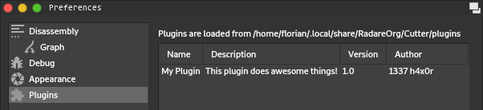

Plugins¶
Cutter supports writing plugins in both C++ and Python. If you are unsure which one to choose, we strongly suggest starting with Python since it allows for a quicker and easier workflow.
If you plan to implement support for a new file format or architecture, Cutter plugins are not the correct approach. Instead, you will want to implement a radare2 plugin, which is documented here.
Loading and Overview¶
Plugins are loaded from an OS-dependent user-level directory. To get the location of this directory and a list of currently loaded plugins, navigate to Edit -> Preferences -> Plugins.
The plugins directory contains two subdirectories, native and python for C++ and Python plugins respectively,
which will be created automatically by Cutter.
Note
The support for Python plugins is only available if Cutter was built with the options CUTTER_ENABLE_PYTHON
and CUTTER_ENABLE_PYTHON_BINDINGS enabled.
This is the case for all official builds from GitHub Releases starting with version 1.8.0.